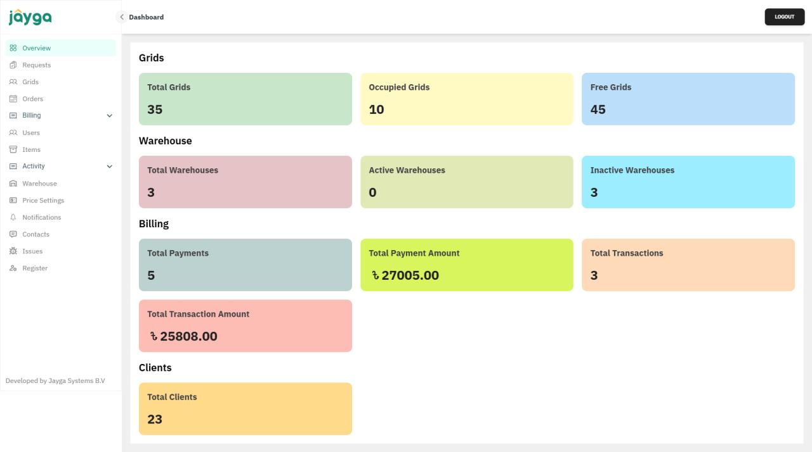
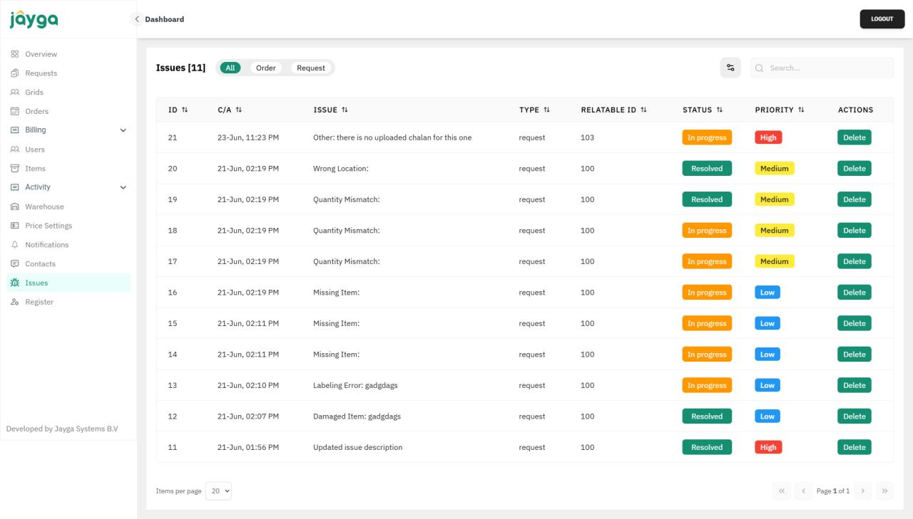
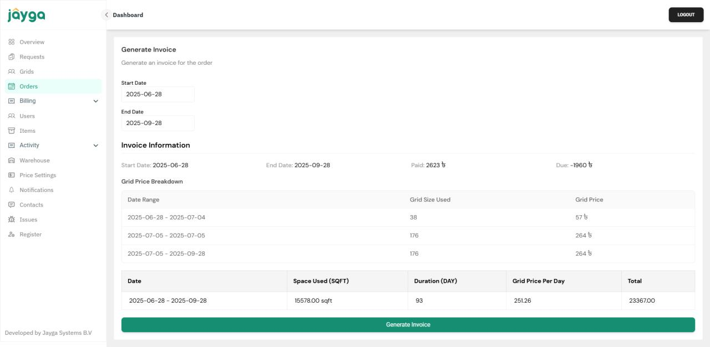
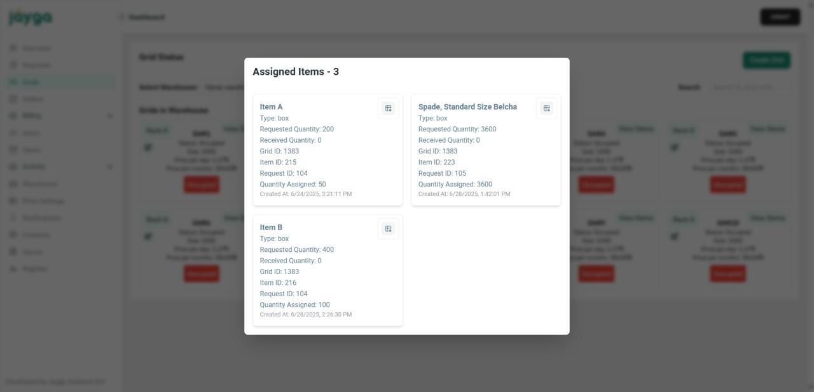
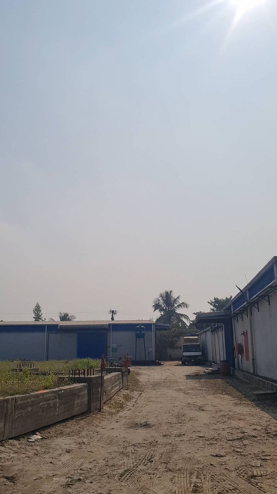
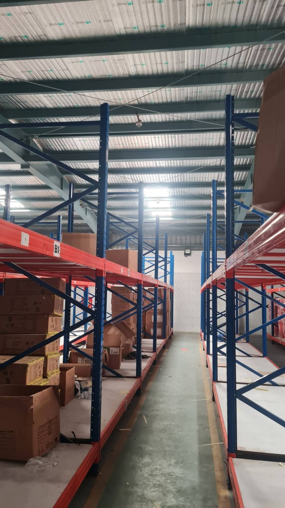
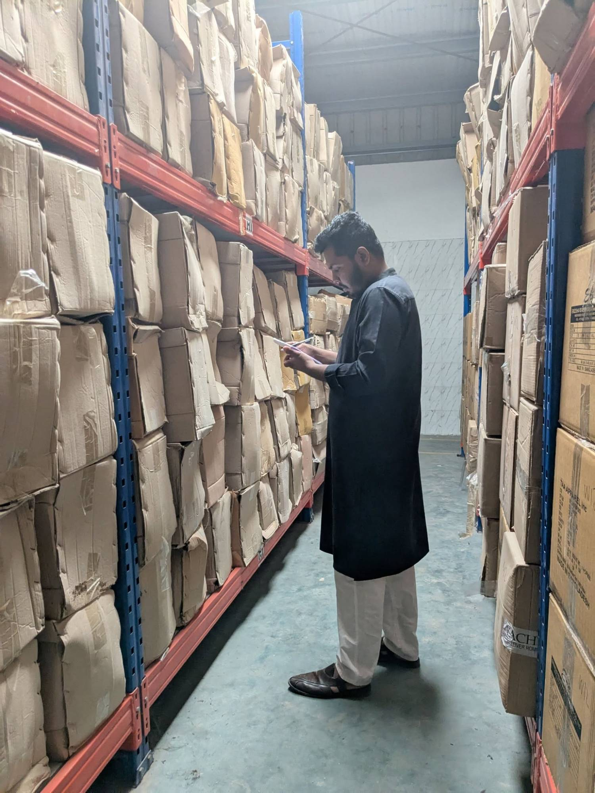

Software Engineer · Jayga · Nov 2024–Mar 2026
Jayga Warehouse Management System
Jayga's business is simple to explain and hard to run: they rent out warehouse space, grid by grid, to anyone who needs it — a shopkeeper storing a season's stock, a growing e-commerce brand that's outgrown its own storeroom. Before this system existed, that entire operation lived in spreadsheets and WhatsApp threads. Someone had to remember which grid belonged to which customer, chase down what was owed at the end of the month, and manually work out an invoice by hand. It held together, but barely, and it stopped scaling the moment the business grew past what one person could keep in their head.
I was brought in to replace all of that with one system, built from the ground up in Laravel. The first problem to solve wasn't billing or logins — it was giving the warehouse itself a shape the software could actually reason about. Every warehouse Jayga operates got broken down into individual grids, each with its own size, price, and live occupancy status, so a manager could look at a screen and immediately see what was free, what was rented, and what was sitting idle, across every location at once.
Once the space itself was mapped, the rest of the day-to-day work could sit on top of it. Customers submit requests for space or for specific items; staff assign inventory to the right grid and track it in and out; and every quantity — requested, assigned, received — stays logged against the exact grid and request it belongs to, so nothing has to be taken on trust or reconstructed from memory later. Different people needed different views into all of this, so access is split by role: admins, staff, and customers each see only what's actually theirs to see.
Money was the other half of the problem, and the messier half. Rentals aren't all the same shape — some are short stays, some run long-term, some need temperature control — so the billing side had to understand that difference. Give it a date range and it works out exactly what's owed, day by day, against the grid space actually used, and produces a clean, itemized invoice at the end of it. Payments come back in through a real payment gateway instead of a bank transfer someone has to manually reconcile, and every transaction is kept for reporting — occupancy, revenue, inventory turnover, all of it, instead of being rebuilt from scratch every time someone asks "how are we actually doing this month?"
None of that matters if the data underneath it can't be trusted, so the system is locked down properly: token-based authentication for every request, activity logged, two-factor login for anyone with real access, and the architecture built with room to plug into a CRM or accounting software later rather than needing a rewrite. What used to be a business run from memory and spreadsheets is now something Jayga's team opens every morning like a dashboard — and trusts.
From the dashboard




In the field
The dashboard is only half the job. Before any of it went live, I spent time on-site at Jayga's actual warehouses — walking the racking, counting real boxes, and checking that what the system said matched what was physically sitting on the shelf.


